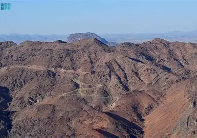

جبل أحد هو أحد المعالم الجغرافية والتاريخية الخالدة في المدينة المنورة. يمتد بطول 7 كيلومترات، وشهدت ساحاته غزوة أحد الشهيرة. قال عنه الرسول ﷺ: "أحد جبل يحبنا ونحبه"، ويضم في جنباته مقبرة شهداء أحد التي دفن فيها سيد الشهداء حمزة بن عبد المطلب رضي الله عنه.